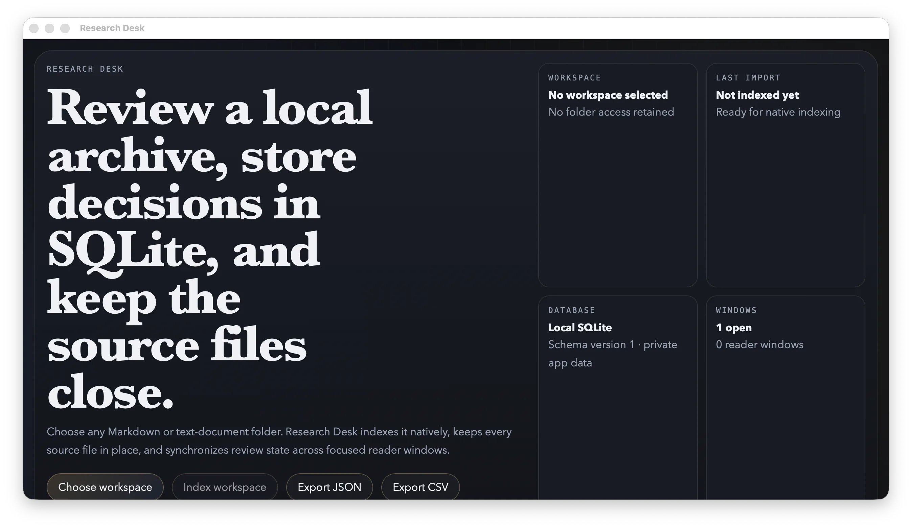

Evidence desks
Index documents, search locally, annotate findings, and keep focused reader windows synchronized.
files + search + notesRust-powered. Frontend-owned.
Build local desktop tools in TypeScript or JavaScript. RustFrame owns typed SQLite, consent-scoped machine access, the native window, and real installers—until you decide to eject.
RC status: Rust crates and native artifacts are public. The initial npm frontend package remains the last registry gate.
$ rustframe new evidence-desk
✓ Vite + TypeScript
✓ SQLite types generated
✓ capability policy validated
$ rustframe dev

01 Embedded SQLite
02 Opaque file grants
03 Window capabilities
04 Native installers
05 Explicit eject
The missing middle
RustFrame sits between them: a deliberately bounded native substrate for applications whose value lives in local structured data, user-selected files, and repeatable machine workflows.
Index documents, search locally, annotate findings, and keep focused reader windows synchronized.
files + search + notesAttach a user-approved library, track decisions in SQLite, and export a portable review trail.
grants + records + exportShip a focused queue, catalog, runbook, or internal console without operating a mandatory server.
schema + jobs + packageOne contract, end to end
You own ordinary frontend code and the product experience. RustFrame owns the repeatable native substrate and keeps it visible in one versioned manifest.
Define tables, windows, permissions, file roots, commands, and package identity as reviewable source.
rustframe.jsonRecord, insert, update, and table-map types stay deterministic and CI-checkable.
rustframe codegenOne process supervisor runs the frontend and hidden native runner together.
rustframe devUnknown permissions, unsafe paths, weak CSPs, and stale generated types fail before shipping.
rustframe validateCreate DMG, MSI, NSIS, AppImage, and Debian output with checksums and metadata.
rustframe packageLeast privilege you can explain
A person chooses a folder. RustFrame returns an opaque grant. Every read, write, watch, dialog, database call, command, and window action is authorized inside native IPC.
effective policy3 permissions
A real workflow, not a toy counter
Research Desk watches Markdown and text files, indexes them without Python, stores review state locally, synchronizes reader windows, exports queues, and protects recovery with SQLite backup and restore.
0required servers
3native hosts
1public API surface
Choose honestly
RustFrame wins by being opinionated, not by pretending to have the broadest desktop ecosystem.
| Need | RustFrame | Tauri | Electron | Browser / PWA |
|---|---|---|---|---|
| App-owned native backend | No until eject | Usually Rust | Node main process | None |
| Typed embedded data by default | Yes · SQLite | Compose plugins | Choose a library | Browser storage |
| Consent-scoped local files | Opaque grants | Capability/plugin scopes | App-defined IPC | Limited picker APIs |
| Native API breadth | Intentionally small | Broad | Broad | Limited |
| Best fit | Local workbenches | Custom native apps | Large JS desktop apps | Connected products |
Start from an empty folder
Use the prebuilt CLI for the shortest path. Rust and the host WebView toolchain are still required to compile the stock native runner.
rustframe doctorcurl --proto '=https' --tlsv1.2 -LsSf \
https://github.com/OthmaneBlial/rustframe/releases/download/v0.1.0-rc.1/rustframe-cli-installer.sh | shpowershell -ExecutionPolicy Bypass -c "irm https://github.com/OthmaneBlial/rustframe/releases/download/v0.1.0-rc.1/rustframe-cli-installer.ps1 | iex"cargo install rustframe-cli --version 0.1.0-rc.1 --lockedRC registry note: dependency installation becomes public after the initial rustframe-api npm publication.
Read only what you need
Build the workflow. Keep the data.